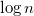

Список с пропусками
Список с пропусками (англ. skip list) — поисковая структура данных, реализующая интерфейс упорядоченного множества, позволяет производить операции поиска, добавления и удаления элемента в списке за достаточно малое время.
Поиск элемента в списке производится за ; добавление и удаление элемета происходит за то же время, что и поиск, однако эти операции могут замедлить поиск в структуре.
Такая производительность достигается за счёт добавления новых уровней. При этом нижним уровнем является исходный список, а каждый следующий уровень - список, содержащий часть элементов предыдущего уровня со ссылками на эти элементы.
Содержание |
Построение
Список с пропусками строится на основе существующего односвязного отсортированного списка.
{kind=link}
Добавив дополнительные уровни, каждый из которых представляет предыдущий уровень без нечетных элементов, мы получим возможность осуществлять поиск, вставку и удаление элементов подобно операциям с двоичным деревом поиска. Соответственно, асимптотика этих операций будет составлять .
{kind=link}
Операции над структурой
Поиск элемента
Допустим, что в нашем списке с пропусками существуют уровней, при этом первым уровнем () будет исходный список.
В таком случае алгоритм поиска в этой структуре будет представлять из себя следующие операции:
- Начинаем поиск элемента в верхнем списке (), рассмотрим первый элемент
- Переходить к следующему элементу списка, пока значение в следующей ячейке меньше или равно ключу
- Переместиться на один уровень вниз и перейти к пункту 2. Если рассматриваемый элемент находится на нижнем уровне - выйти из поиска
Пример поиска числа в списке из описания:

Рассмотрим время работы для списка с двумя уровнями. Тогда время работы алгоритма поиска будет зависеть от количества элементов на уровне . Представим, что на этот уровень у нас случайным образом попало несколько элементов. Следовательно в худшем случае поиска мы получим следующую оценку на время работы:
Минимизируя, мы получаем, что
В итоге время за которое мы найдем элемент в списке с пропусками с двумя уровнями будет равняться:
Также можно убедиться, что список с пропусками, имеющий уровней, будет лучше всего работать с ![\sqrt[k]{n}](./SkipListAlghoritm_files/225baeba294b5a6d8b84f0630451abb4.png) элементами на уровне; время работы такого списка будет равно .
Для уровней же время работы составит
элементами на уровне; время работы такого списка будет равно .
Для уровней же время работы составит
Вставка элемента
Для вставки элемента в список с пропусками, нам необходимо выполнить следующие шаги:
- Найти с помощью алгоритма поиска позицию, куда нам надо вставить этот элемент
- Вставить наш элемент в нижний уровень списка с пропусками
- «Подбросить монетку» и в зависимости от результата протолкнуть элемент на уровень выше
- Повторять предыдущий шаг до тех пор, пока у нас «подброс монетки» дает положительный результат
Таким образом, если использовать честную монету, то математическое ожидание количества элементов на втором уровне равняется , на третьем уровне и т.д. На уровне  у нас окажется один элемент. Ну и соответственно вероятности попасть элементу на второй уровень — это , на третий и т.д. Вероятность попасть на уровень равна .
Используя монетку с распределением отличным от , , можно влиять на количество элементов на верхних уровнях. Так, например, при использовании монеты с распределением }, математическое ожидание количества элементов на уровне равно  , каждый уровень будет составлять
, каждый уровень будет составлять  от предыдущего; время поиска будет равно . Соответственно при честной монетке и уровней получаем оценку, полученную ранее.
Для крайних распределений:
от предыдущего; время поиска будет равно . Соответственно при честной монетке и уровней получаем оценку, полученную ранее.
Для крайних распределений:
- —
- — (если разрешить добавление новых уровней при проталкивании элемента после броска монетки; иначе )
Удаление элемента
Алгоритм удаления достаточно тривиален.
- Найти удаляемый элемент
- Удалить его со всех уровней
Псевдокод
Наглядный, но не очень эффективный по памяти вариант списка с пропусками.
В узлах списка хранятся:
- — следующий узел
- — тот же узел на следующем уровне
- — данные типа T
- — ключ типа K
Конструктор
list skip_list (list l):
list lvl = build_lvl(l) // Здесь происходит построение первого уровня
while lvl.size() > 2
lvl = build_lvl (lvl) // Добавление следующих уровней; последний содержит два элемента
return t
list build_lvl (list lvl) // Отсеивание нечётных элементов
list next_lvl
node i = lvl.head() // Перебор всех элементов lvl
while (i != null) and (i != lvl.tail())
next_lvl.push_back(node(i.key, i)) // Добавление чётного элемента;
i = i.next.next // он содержит ключ и ссылку на предыдущий уровень
return next_lvl
Поиск элемента по ключу:
T find (list skip_list, K key)
node res
for (res = skip_list.head; res.ref != null; res = res.ref)
// Cпускаемся на шаг вниз, если можем (п. 3)
while res.key <= key // Переходим к следующему элементу (п. 2)
res = res.next()
return res.data
Вставка:
node insert (node i, K key, T data)
while i.key <= key // Ищем подходящее место
i = i.next()
node tmp = null // Для записи в поле down
if i.ref != null // Мы не на нижнем уровне
tmp = insert (i.ref, key) // Рекурсивный вызов на более низком уровне
if tmp == null // Проверка броска монетки
return null
i.next = new node (i.next, tmp, data, key) //Непосредственно вставка
if random(0,1) > 0.5 // Бросок монетки
return i.next // Нужно передать новый элемент для вставки выше
else
return null
void insert (list skip_list, K key, T data) // Обёрточка
insert(skip_list.head, key, data)
Удаление:
void erase (node i, K key)
if i == null
return
while i.key <= key // Ищем элемент
i = i.next()
erase(i.ref, key) // Удаляем с нижних уровней
if i.key == key // Если ключ совпадает
delete(i) // удаляем и с этого уровня
void erase (list skip_list, K key) // Обёрточка
erase(skip_list.head, key)
Применение
- Базы данных
- Распределённые вычисления и p2p
- Масштабируемые параллельные приоритетные очереди и словари
В вычислительной геометрии широко применяются структуры на основе списка с пропусками.
См. также
Структуры на основе списка с пропусками: